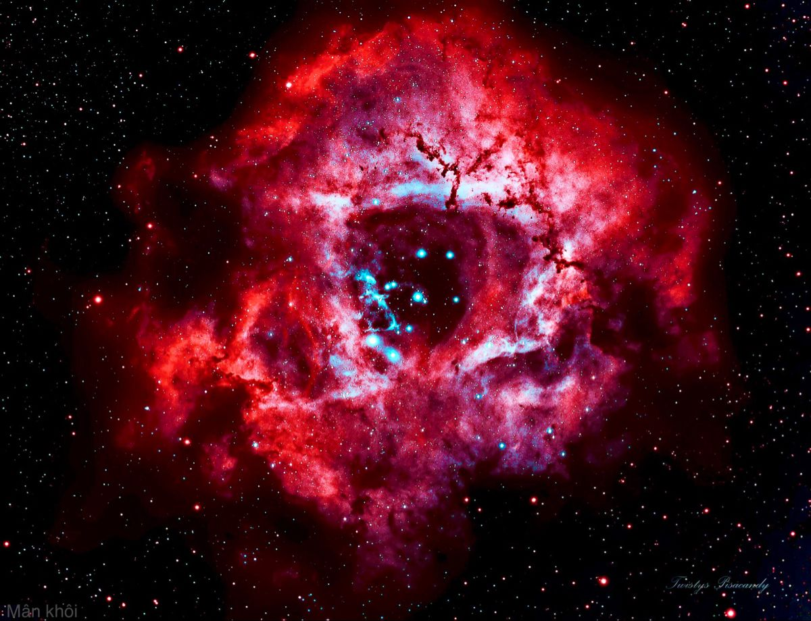

د ناڤ فیزیا فەلەکناسی دا، دەمێ ستێرەکا مەزن دگەهیتە دوماهیکا تەمەنێ خۆ، تەقینەکا مەزن و توند تێدا چێدبیت کو دبێژنێ Supernova. دەمێ ستێر دتەقیت، تەمامیا گاز و پاشمایێن خۆ ب هێزەکا مەزن بەڵاڤ دکەتە د ناڤ فەزای دا.
ئەڤ گاز و تەپۆتۆزێن هاتییە بەڵاڤکرن، د ناڤ بۆشاییێ دا کۆمەڵەکا تەمومژاوی یا مەزن دروست دکەن کو د زانستێ فیزیاێ دا دبێژنێ نێبولا (Nebula). ناسا (NASA) ڤەدیت کو تەمومژا نێبولا یا ژ بەر مای، د ناڤ تەلەسکۆپان دا هاتیە دیتن ب تەمامی هاوشێوەیا گۆڵەکا سوور یا گەش دیار دبیت.
"فَإِذَا انشَقَّتِ السَّمَاءُ فَكَانَتْ وَرْدَةً كَالدِّهَانِ"
الرحمن: ٣٧ - "دەمێ عەسمان شەق دبیت (ژێک دڕیێت و دەتەقیت)، دێ بیتە گۆڵەکا سوور (وردة)یان وەک ڕۆنی یان چەرمی یێ ڕەنگاوڕەنگ . "